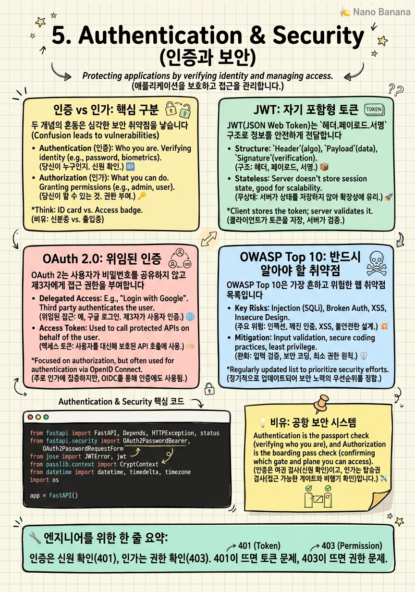

Authentication & Security

🎯 학습 목표
- 인증(Authentication)과 인가(Authorization)의 차이를 명확히 구분할 수 있다
- JWT의 구조(헤더.페이로드.서명)를 이해하고 직접 발급·검증할 수 있다
- OAuth 2.0의 Authorization Code Flow를 구현하거나 설명할 수 있다
- SQL 인젝션, XSS 같은 주요 보안 취약점을 코드에서 방지할 수 있다
- API 키를 안전하게 저장·관리하는 방법을 안다
보안은 나중에 추가하는 것이 아니라 처음부터 설계에 포함해야 합니다. AI 서비스는 특히 취약합니다 — 모델 추론 API가 무단 접근에 노출되면 GPU 비용이 폭발하고, 학습 데이터와 모델이 유출되며, 프롬프트 인젝션 공격에 악용될 수 있습니다.
이 챕터에서는 현대 웹 서비스에서 가장 널리 사용되는 인증 방식인 JWT(JSON Web Token)와 OAuth 2.0을 중심으로, API 보안의 핵심을 다룹니다. 또한 OWASP(Open Web Application Security Project)가 정의한 10대 취약점 중 백엔드 개발자가 반드시 알아야 할 항목들을 코드 수준에서 살펴봅니다.
"내 서비스는 작아서 해킹 대상이 안 된다"는 착각은 버려야 합니다. 공격자는 서비스를 직접 타겟팅하는 것이 아니라 인터넷 전체를 자동 스캔합니다. 취약한 설정(ALLOWED_HOSTS=*, 기본 비밀번호, 미패치 라이브러리)은 몇 분 안에 발견됩니다.
핵심 내용
인증 vs 인가: 핵심 구분
두 개념의 혼동은 심각한 보안 취약점을 낳습니다.
인증(Authentication) = "당신은 누구인가?" — 신원 확인. 사용자 이름 + 비밀번호, 지문, OTP가 인증 수단입니다. 성공 시 토큰이나 세션이 발급됩니다. HTTP에서 401 Unauthorized는 인증 실패입니다.
인가(Authorization) = "당신은 무엇을 할 수 있는가?" — 권한 확인. 인증된 사용자가 특정 리소스에 접근하거나 특정 작업을 수행할 권한이 있는지 확인합니다. 성공한 인증이 모든 권한을 의미하지 않습니다. HTTP에서 403 Forbidden은 인가 실패입니다.
세션 기반 vs 토큰 기반 인증
| 구분 | 세션 기반 | 토큰 기반 (JWT) | |---|---|---| | 상태 저장 | 서버 (세션 저장소) | 클라이언트 (토큰 자체) | | 확장성 | 세션 공유 필요 | 무상태, 수평 확장 용이 | | 취소 방법 | 세션 삭제 | 블랙리스트 또는 짧은 TTL | | 모바일/SPA | 쿠키 제한 있음 | Authorization 헤더로 자유로움 |
JWT: 자기 포함형 토큰
JWT(JSON Web Token)는 헤더.페이로드.서명 세 파트를 .으로 연결한 문자열입니다. Base64URL로 인코딩되어 있어 사람이 읽을 수 있지만(jwt.io에서 디코딩 가능), 서명으로 위변조를 방지합니다.
헤더(Header) 는 토큰 타입(JWT)과 서명 알고리즘(HS256, RS256)을 포함합니다.
페이로드(Payload) 는 클레임(Claim)의 집합입니다. 클레임은 키-값 쌍으로, 표준 클레임(sub: 사용자 ID, exp: 만료 시간, iat: 발급 시간)과 커스텀 클레임(역할, 권한)을 포함합니다.
서명(Signature) 은 헤더와 페이로드를 비밀 키(HS256) 또는 개인 키(RS256)로 서명합니다. 서명을 검증하면 토큰이 변조되지 않았음을 확인할 수 있습니다.
중요한 보안 포인트: JWT 페이로드는 암호화되지 않습니다. 누구나 디코딩해 내용을 볼 수 있습니다. 비밀번호, 신용카드 번호 같은 민감 정보를 페이로드에 넣으면 안 됩니다. 서명은 변조 방지이지 기밀성 보장이 아닙니다.
Access Token은 짧은 TTL(15분~1시간), Refresh Token은 긴 TTL(7~30일)로 설정합니다. Access Token이 탈취되어도 짧은 시간 내에 만료됩니다.
OAuth 2.0: 위임된 인증
OAuth 2.0은 사용자가 자신의 비밀번호를 서드파티에 주지 않고 권한을 위임하는 프로토콜입니다. "Google로 로그인" 버튼이 OAuth 2.0을 사용합니다.
Authorization Code Flow (웹 앱에서 가장 안전한 방식):
1. 사용자가 "Google로 로그인" 클릭 → 앱이 Google 로그인 페이지로 리다이렉트
2. 사용자가 Google에서 로그인 → Google이 code를 앱으로 리다이렉트
3. 앱 서버가 code를 Google에 보내 Access Token 교환 (서버-서버)
4. 앱이 Access Token으로 사용자 정보 조회
code는 단기 유효(10분)하고 한 번만 사용 가능합니다. Access Token 교환은 클라이언트가 아닌 서버에서 이루어지므로 토큰이 브라우저에 노출되지 않습니다.
FastAPI에서는 python-jose, authlib 같은 라이브러리로 OAuth 클라이언트를 구현하거나, Auth0, Supabase Auth 같은 서비스를 사용해 인증을 위임할 수 있습니다.
OWASP Top 10: 반드시 알아야 할 취약점
OWASP Top 10은 가장 흔하고 위험한 웹 취약점 목록입니다. 백엔드 개발자가 반드시 알아야 할 항목들입니다.
A01 - 접근 제어 취약점: 인가 로직 누락. 예: 다른 사용자의 데이터를 조회할 수 있는 IDOR(Insecure Direct Object Reference). GET /users/123/data에서 현재 로그인 사용자가 사용자 123인지 확인하지 않는 경우.
A02 - 암호화 실패: 민감 데이터를 평문으로 저장하거나 약한 암호화를 사용. 비밀번호는 반드시 bcrypt 또는 argon2로 해싱합니다. MD5, SHA1로 비밀번호를 저장하면 레인보우 테이블로 즉시 크래킹됩니다.
A03 - 인젝션: SQL 인젝션, 커맨드 인젝션. 사용자 입력을 쿼리에 직접 포맷팅하면 발생. 항상 파라미터화된 쿼리($1, ?)를 사용합니다.
A07 - 인증 실패: 약한 비밀번호 정책, JWT 검증 누락, 무제한 로그인 시도. Rate Limiting과 JWT 서명 검증이 필수입니다.
A09 - 보안 로깅 실패: 침해 사고가 발생했을 때 로그가 없으면 원인 파악이 불가능합니다. 모든 인증 시도, 권한 실패, 중요 데이터 접근을 로깅합니다.
API Key 관리와 비밀 관리
API 키, DB 비밀번호, JWT 시크릿 같은 민감 정보를 코드에 하드코딩하는 것은 가장 흔한 보안 실수입니다. GitHub에 공개된 코드에서 AWS 키가 발견되면 수분 안에 악용됩니다.
환경 변수 로 분리합니다. .env 파일에 저장하고 python-dotenv로 로드합니다. .gitignore에 .env를 반드시 추가합니다.
시크릿 매니저 를 프로덕션에서 사용합니다. AWS Secrets Manager, GCP Secret Manager, HashiCorp Vault는 비밀 값을 암호화하여 저장하고, 접근 감사 로그를 남깁니다. 코드는 시크릿 값이 아니라 "어디서 가져올지"만 알면 됩니다.
API 키는 bcrypt로 해싱해 DB에 저장합니다. 사용자가 키를 분실하면 재발급(새 키 생성, 이전 키 무효화)해야 합니다. 비밀번호와 동일한 원칙을 적용합니다.
최소 권한 원칙(Principle of Least Privilege): 서비스에 필요한 최소한의 권한만 부여합니다. 읽기 전용 API는 읽기 전용 DB 계정을 사용하고, 특정 S3 버킷만 접근하는 Lambda는 해당 버킷에만 권한을 줍니다.
💡 비유로 이해하기
인증과 인가를 공항 보안으로 이해해봅시다. 공항 입구에서 여권과 탑승권을 확인하는 것이 인증입니다. 여권은 신원(당신이 누구인지)을, 탑승권은 유효한 승객임을 증명합니다. 검사를 통과하면 JWT 토큰처럼 팔찌(탑승 게이트 스티커)를 받습니다.
이후 비즈니스 라운지 입장 시 팔찌를 보여주면 되는데, 이때 직원이 "이 사람이 비즈니스 라운지 이용 권한이 있는가?"를 확인하는 것이 인가입니다. 이미 공항 안에 있는(인증된) 사람이라도 라운지 이용 권한은 별도입니다.
OAuth는 위임장입니다. 내가 직접 모든 공항에 여권을 보여주는 대신, Google이라는 신뢰할 수 있는 기관이 "이 사람을 우리가 인증했다"고 보증합니다. 앱은 내 Google 비밀번호를 모르지만, Google의 보증서(Access Token)로 내 신원을 확인할 수 있습니다.
💻 코드 예시
FastAPI에서 JWT 기반 인증 시스템을 구현합니다. 로그인 엔드포인트에서 토큰을 발급하고, 보호된 엔드포인트에서 토큰을 검증합니다.
from fastapi import FastAPI, Depends, HTTPException, status
from fastapi.security import OAuth2PasswordBearer, OAuth2PasswordRequestForm
from jose import JWTError, jwt
from passlib.context import CryptContext
from datetime import datetime, timedelta, timezone
import os
app = FastAPI()
# 설정
SECRET_KEY = os.environ["JWT_SECRET_KEY"] # 절대 하드코딩 금지
ALGORITHM = "HS256"
ACCESS_TOKEN_EXPIRE_MINUTES = 30
pwd_context = CryptContext(schemes=["bcrypt"], deprecated="auto")
oauth2_scheme = OAuth2PasswordBearer(tokenUrl="/auth/login")
# 토큰 생성
def create_access_token(data: dict) -> str:
to_encode = data.copy()
expire = datetime.now(timezone.utc) + timedelta(minutes=ACCESS_TOKEN_EXPIRE_MINUTES)
to_encode["exp"] = expire
return jwt.encode(to_encode, SECRET_KEY, algorithm=ALGORITHM)
# 현재 사용자 추출 (의존성)
async def get_current_user(token: str = Depends(oauth2_scheme)) -> dict:
credentials_exception = HTTPException(
status_code=status.HTTP_401_UNAUTHORIZED,
detail="Invalid or expired token",
headers={"WWW-Authenticate": "Bearer"},
)
try:
payload = jwt.decode(token, SECRET_KEY, algorithms=[ALGORITHM])
user_id: str = payload.get("sub")
if user_id is None:
raise credentials_exception
return {"user_id": user_id, "role": payload.get("role", "user")}
except JWTError:
raise credentials_exception
# 관리자 권한 체크 (인가)
def require_admin(current_user=Depends(get_current_user)):
if current_user["role"] != "admin":
raise HTTPException(status_code=403, detail="Admin required")
return current_user
@app.post("/auth/login")
async def login(form_data: OAuth2PasswordRequestForm = Depends()):
# 실제로는 DB에서 사용자 조회 후 비밀번호 검증
if not pwd_context.verify(form_data.password, "$2b$12$hashed..."):
raise HTTPException(status_code=401, detail="Incorrect credentials")
token = create_access_token({"sub": form_data.username, "role": "user"})
return {"access_token": token, "token_type": "bearer"}
@app.get("/me")
async def get_me(user=Depends(get_current_user)):
return user # 인증된 사용자만 접근 가능
@app.delete("/admin/models/{model_id}")
async def delete_model(model_id: str, admin=Depends(require_admin)):
return {"deleted": model_id} # 관리자만 접근 가능os.environ["JWT_SECRET_KEY"]는 환경 변수에서 시크릿을 가져옵니다. 없으면 KeyError가 발생해 서비스가 시작되지 않습니다 — 의도적으로 안전한 실패를 만든 것입니다. CryptContext(schemes=["bcrypt"])는 bcrypt로 비밀번호를 해싱·검증합니다. require_admin은 get_current_user에 의존하므로 인증(토큰 검증) + 인가(역할 확인)를 순서대로 처리합니다.
🏭 현업에서의 평가
✅ 시니어가 보는 것
- 비밀번호를 평문이나 MD5로 저장하지 않고 bcrypt/argon2를 사용하는가
- JWT 서명 검증을 실제로 수행하는가 (decode 시 알고리즘 명시)
- SQL 인젝션 방지를 위해 파라미터화된 쿼리를 사용하는가
- 민감 정보를 환경 변수 또는 시크릿 매니저로 관리하는가
⚠️ 레드 플래그
- JWT 페이로드에 비밀번호나 카드 번호를 저장하는 경우
- 알고리즘을 `none`으로 설정할 수 있는 JWT 구현
- 모든 CORS를 `*`로 허용하는 프로덕션 설정
🎤 예상 인터뷰 질문
- JWT의 만료 시간이 지난 토큰을 사용자가 제출했을 때 어떻게 처리해야 하나요?
- SQL 인젝션이 발생하는 코드 예시를 보여주고, 어떻게 수정하겠어요?
- 서비스가 침해당했을 때 모든 사용자의 JWT를 즉시 무효화하려면 어떻게 해야 하나요?
✨ 핵심 요약
인증 ≠ 인가
인증은 신원 확인(401), 인가는 권한 확인(403). 401이 뜨면 토큰 문제, 403이 뜨면 권한 문제.
JWT = 자기 포함형
JWT는 DB 조회 없이 서버가 검증할 수 있는 토큰. 페이로드는 암호화 안 됨 — 비밀 정보 넣지 말 것.
bcrypt for 비밀번호
비밀번호는 반드시 bcrypt 또는 argon2로 해싱. MD5, SHA1은 레인보우 테이블에 취약.
환경 변수 = 시크릿
API 키, JWT 시크릿, DB 비밀번호는 코드가 아닌 환경 변수 또는 시크릿 매니저에 저장.
파라미터화된 쿼리
SQL 인젝션은 f-string으로 쿼리를 만들면 발생한다. 항상 $1, ? 플레이스홀더를 사용.
최소 권한 원칙
서비스에 필요한 최소한의 권한만 부여한다. 읽기만 하는 서비스에 쓰기 권한을 주지 않는다.